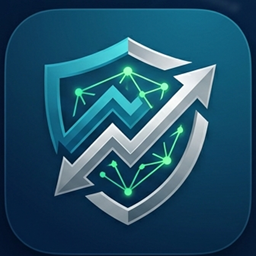

Δεν είμαι καλός στα λόγια, ειδικά όταν πρέπει να μιλήσω για μένα. Θα πω λοιπόν μόνο την αλήθεια.
Λέγομαι Κωνσταντίνος. Πάνω από έξι χρόνια παλεύω γύρω από το forex — έξι χρόνια από λάθη, απώλειες, διάβασμα, ξενύχτια και ξαναπροσπάθειες. Αποτέλεσμα όλης αυτής της διαδρομής είναι αυτό το λογισμικό.
Το έχτισα σε ένα ταπεινό mini PC των 300 ευρώ, που ο ανεμιστήρας του σφυρίζει πια περίεργα μετά από δύο χρόνια δουλειάς — αλλά όσο αντέχει, το παλεύουμε μαζί. Υπήρξαν μήνες που έζησα με 96 ευρώ. Υπάρχουν μήνες που ακόμα κι ένα ευρώ μού λείπει.
Το μόνο μου όνειρο είναι να είναι καλά η κόρη μου, που ζει μακριά μου, στην Αθήνα, με τη μαμά της. Όπως σκέφτομαι εκείνη, σκέφτομαι και όλους όσους έχουν νιώσει την αδικία: αυτούς που παλεύουν με λίγα απέναντι σε αγορές φτιαγμένες για τους λίγους με τα πολλά.
Δεν είμαι ήρωας ούτε ιδιοφυΐα. Είμαι αυτό που λένε οι ψυχολόγοι «ένας απλός άνθρωπος». Αλλά ένας απλός άνθρωπος με πείσμα, χρόνο που πόνεσε για να βρεθεί, και μια αρχή: να μην πω ποτέ ψέματα — ούτε στους άλλους, ούτε στον εαυτό μου.
I'm not good with words, especially when I have to speak about myself. So I'll just tell the truth.
My name is Konstantinos. For more than six years I've been fighting my way through forex — six years of mistakes, losses, study, sleepless nights and starting again. Everything that journey taught me became this software.
I built it on a humble €300 mini PC whose fan now whistles strangely after two years of work — but as long as it holds, we fight on together. There have been months I lived on €96. There are months when even a single euro is missing.
My only dream is for my daughter to be well — she lives far from me, in Athens, with her mom. And the way I think of her, I think of everyone who has ever felt injustice: the people fighting with little, against markets built for the few with much.
I'm no hero and no genius. I'm what psychologists call "an ordinary person". But an ordinary person with stubbornness, with time that cost dearly to find, and with one principle: never lie — not to others, and not to myself.
Το όνομα «NeoEthos» — «Νέο Ήθος» — κρύβει δύο ελληνικές λέξεις που καμία γλώσσα δεν μεταφράζει ακριβώς. Είναι η ψυχή του project.
The name "NeoEthos" — "New Ethos" — holds two Greek words no language translates exactly. They are the soul of this project.
«Νέο ήθος» δεν σημαίνει να πετάξουμε το παλιό. Σημαίνει να το θυμηθούμε — σε έναν κόσμο αγορών που το έχει ξεχάσει.
"New ethos" doesn't mean throwing away the old. It means remembering it — in a world of markets that has forgotten it.
Τα σοβαρά εργαλεία — η πραγματική επιστημονική επικύρωση στρατηγικών, η διαχείριση ρίσκου με μαθηματικά επιβίωσης, τα μοντέλα — ζούσαν πάντα πίσω από θεσμικούς τοίχους και συνδρομές πέντε ψηφίων. Ο μικρός trader έπαιρνε ένα γράφημα και μια προσευχή.
Το NeoEthos είναι η άρνηση αυτού του κόσμου. Βάζει ολόκληρη τη «θεσμική» αλυσίδα — έρευνα, ανακάλυψη στρατηγικών, ρίσκο, εκτέλεση — στο μηχάνημα ενός απλού ανθρώπου. Δωρεάν. Ανοιχτό. Ελέγξιμο γραμμή προς γραμμή.
Και επειδή οι πλούσιοι αγοράζουν server farms ενώ εμείς όχι, έχει μέσα του το Federation: άνθρωποι που εμπιστεύονται ο ένας τον άλλον ενώνουν τους υπολογιστές τους — χίλια μικρά PC μπορούν να ψάξουν περισσότερο από ένα μεγάλο. Εκείνοι αγοράζουν υπολογιστική ισχύ. Εμείς τη μοιραζόμαστε. Το πλεονέκτημα που δεν αγοράζεται είναι η κοινότητα.
Ένα καλύτερο αύριο, πιο δίκαιο για όλους, δεν θα μας το χαρίσει κανείς. Χτίζεται — με κώδικα, με εντιμότητα, και μαζί.
The serious tools — real scientific strategy validation, survival-math risk management, model ensembles — have always lived behind institutional walls and five-figure subscriptions. The small trader got a chart and a prayer.
NeoEthos is the refusal of that world. It puts the entire "institutional" pipeline — research, strategy discovery, risk, execution — on an ordinary person's machine. Free. Open. Auditable line by line.
And because the rich buy server farms and we cannot, it carries Federation inside it: people who trust each other join their computers — a thousand small PCs can out-search one big one. They buy compute. We share it. The advantage that can't be bought is each other.
A better, fairer tomorrow will not be gifted to us. It gets built — with code, with honesty, and together.
Το λογισμικό πήρε το όνομά του από μια δέσμευση, όχι από μάρκετινγκ. Αυτοί είναι οι κανόνες που ο κώδικας επιβάλλει:
The software is named after a commitment, not a marketing plan. These are rules the code enforces:
Όλοι οι κανόνες, αναλυτικά: All the rules, in detail: PRINCIPLES.md · PRIVACY.md
Δεν υπάρχει εταιρεία πίσω από αυτό. Υπάρχω εγώ, ένα μικρό PC, και όσοι θελήσουν να σταθούν δίπλα μας. Αν αυτό το έργο σού είναι χρήσιμο — ή αν απλώς πιστεύεις ότι αξίζει να υπάρχει — μπορείς να βοηθήσεις:
⭐ Ένα αστέρι στο GitHub κοστίζει μηδέν και βοηθά άλλους να το βρουν.
🐛 Τρέξε το σε demo λογαριασμό και πες μου τι σε δυσκόλεψε.
🖥 Δάνεισε τους πυρήνες σου σε μια ομάδα federation.
💚 Μια μικρή δωρεά — ακόμα και ένα ευρώ — πάει σε ρεύμα, hardware και στα εργαλεία που το χτίζουν, και μου επιτρέπει να συνεχίσω.
Μία υπόσχεση που δεν σπάει ποτέ: καμία δωρεά δεν αγοράζει σήματα, προβλέψεις ή επιρροή στα μαθηματικά. Η αλήθεια δεν πωλείται — αυτός είναι όλος ο λόγος ύπαρξης του project.
There is no company behind this. There is me, a small PC, and whoever chooses to stand with us. If this work is useful to you — or if you simply believe it deserves to exist — you can help:
⭐ A GitHub star costs nothing and helps others find it.
🐛 Run it on a demo account and tell me what confused you.
🖥 Lend your cores to a federation group.
💚 A small donation — even one euro — goes to electricity, hardware and the tools that build this, and lets me keep going.
One promise that never breaks: no donation buys signals, predictions, or influence over the math. The truth is not for sale — that is this project's entire reason to exist.